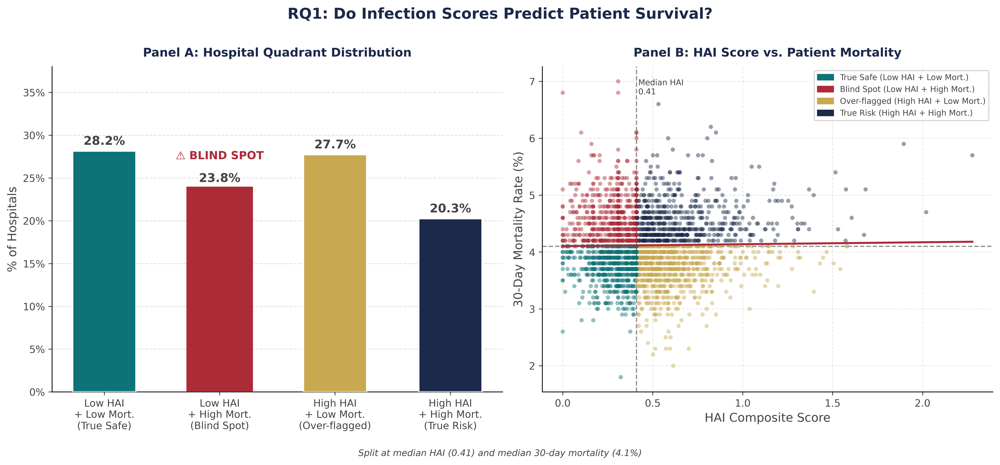
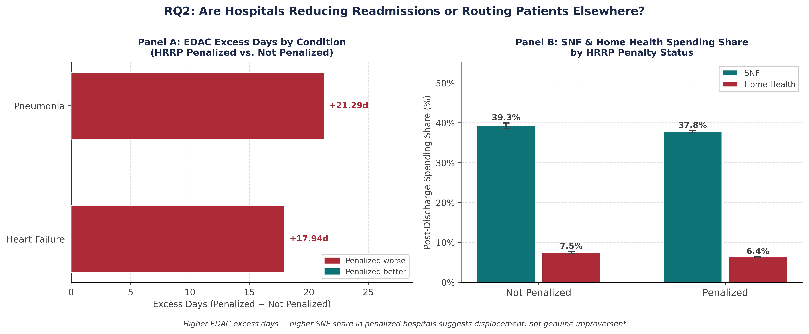
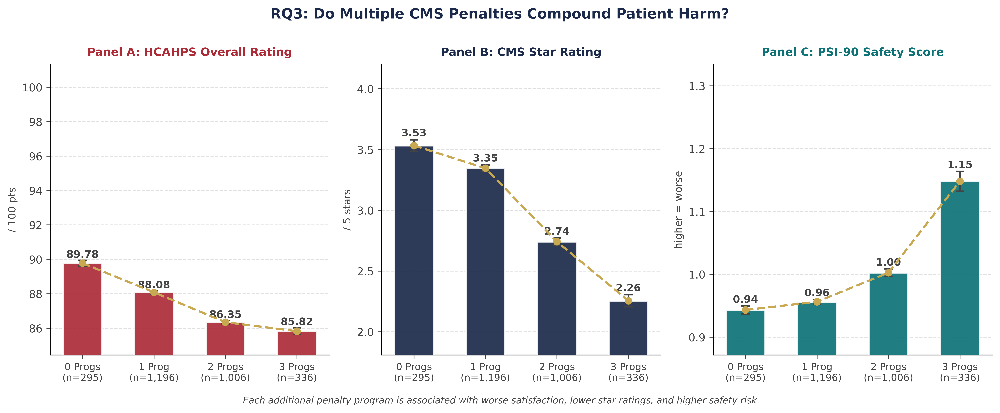

Worcester Polytechnic Institute · BUS596: Master of Science Capstone Project · Spring 2026
Readmission Displacement, Infection Illusions, and Multi-Program Penalty Burden in U.S. Acute Care Hospitals
Research Poster
Full academic poster - click Present to go fullscreen for your presentation session.
Press ESC to exit fullscreen and return to the site
Research Findings
CMS runs three concurrent penalty programs to drive quality improvement. Our analysis of 2,833 acute care hospitals reveals each program creates a distinct failure mode.
Hospital Explorer
Search all 2,833 acute care hospitals in the dataset. Filter by state, penalty status, or risk category - then click any card for the full metric profile.
Research Design
Cross-sectional OLS analysis of 2,833 U.S. acute care hospitals using 11 merged CMS public-use files. Three research questions, nine regression models, one analytical framework.
Analytical Pipeline
CMS Source Files
Three-Model Attenuation Framework
Raw association. No controls. Captures the total observed gap between penalized and non-penalized groups.
Adds ownership type (nonprofit, for-profit, government) and geographic region. Removes structural between-group differences.
Adds CMS star rating as a pre-existing quality proxy. Large attenuation here = selection bias, not behavioral effect.
Regression Results by Research Question
Data Visualizations
Charts from the full FY2026 CMS dataset analysis - click each tab to explore the three research questions.

Left: 550 hospitals (19.4%) fall in the blind-spot zone - low HAI composite but above-median mortality. The HAC program detects only 9.8% of them. | Right: Scatter of HAI composite vs 30-day mortality. ■ Blind-spot hospitals ■ All others. Near-zero correlation (r = 0.015) means HAI compliance tells us almost nothing about whether patients survive.

Left: HRRP-penalized hospitals show dramatically higher excess days in acute care (EDAC) post-discharge - +17.9 days for heart failure, +21.3 days for pneumonia. Only 22–24% of this gap is explained by pre-existing quality differences. | Right: Non-penalized hospitals route more spending through SNFs (39.0% vs 38.0%) and home health (7.0% vs 6.0%) - consistent with readmission displacement via post-acute routing.

Left: HCAHPS overall rating drops from 89.776 (0 penalties) to 85.824 (3 penalties) - a 3.95-point gap (p < 0.001). | Center: CMS star rating falls from 3.532★ to 2.256★. | Right: PSI-90 composite rises from 0.943 → 1.148 - values above 1.0 indicate worse-than-expected patient safety events. Every additional concurrent penalty is independently associated with worse outcomes across all three measures.
So What Now
CMS is measuring hospitals. Hospitals are managing the measurements. Someone needs to close the gap.
Hospitals meeting the HAI threshold but with above-median mortality should be flagged regardless of penalty status. Zero-readmission performance combined with high mortality is not quality - it is displacement.
Weight EDAC at 50% of the readmission score. This eliminates the financial incentive to discharge patients to SNFs to game the 30-day window - the exact displacement mechanism we document at 22-24% behavioral attenuation.
Hospitals in 2+ concurrent programs should face a penalty cap. Redirect penalty revenue as improvement grants targeting the 155 convergent hospitals - 56.8% of which are in the South, disproportionately serving Medicaid populations.
Track the same hospitals across 5+ years to establish Granger causality - does penalty exposure precede quality decline, or do low-quality hospitals self-select into penalized status?
Link hospital penalty status to Medicare claims data. Directly test whether post-acute discharge patterns (SNF vs. home) change in the quarters immediately following HRRP penalty announcements.
Model whether the South's disproportionate convergent-penalty burden reflects differential CMS scoring design, payer-mix constraints, or structural care infrastructure gaps - each demands a different policy lever.
Simulate alternative composite weighting schemes (e.g., EDAC at 50%, mortality as veto condition) to quantify how many of the 155 convergent hospitals exit the penalty corridor under reformed metrics.
Across three research questions, using nine OLS models on 2,833 hospitals, we find consistent evidence that simultaneous CMS penalty programs produce behavioral responses that diverge from their intended outcomes. Hospitals penalized for readmissions show EDAC gaps unexplained by quality. Hospitals penalized for HACs post better HAI numbers but not better mortality. Hospitals in multiple programs score worse on every metric - not because they are worse hospitals, but because they are operating under the weight of compounding incentive structures.
Attenuation analysis distinguishes this from quality-selection: 22-24% in RQ2 signals genuine behavioral response. The mechanism is not hidden. The data is public. The fix is structural.